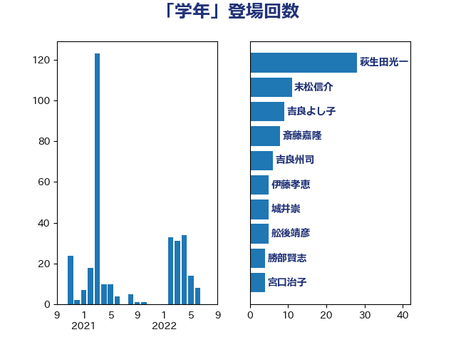

単語「学年」

| 萩生田光一 | 自由民主党 | 28 回 |
| 末松信介 | 自由民主党 | 11 回 |
| 吉良よし子 | 日本共産党 | 9 回 |
| 斎藤嘉隆 | 立憲民主党 | 8 回 |
| 吉良州司 | 無所属 | 6 回 |
| 伊藤孝恵 | 国民民主党 | 5 回 |
| 城井崇 | 立憲民主党 | 5 回 |
| 舩後靖彦 | れいわ新選組 | 5 回 |
| 勝部賢志 | 立憲民主党 | 4 回 |
| 宮口治子 | 立憲民主党 | 4 回 |
| 山崎正恭 | 公明党 | 4 回 |
| 水岡俊一 | 立憲民主党 | 4 回 |
| 白石洋一 | 立憲民主党 | 4 回 |
| 菊田真紀子 | 立憲民主党 | 4 回 |
| 堀場幸子 | 日本維新の会 | 3 回 |
| 岬麻紀 | 日本維新の会 | 3 回 |
| 笠浩史 | 無所属 | 3 回 |
| 蓮舫 | 立憲民主党 | 3 回 |
| 西岡秀子 | 国民民主党 | 3 回 |
| 西村康稔 | 自由民主党 | 3 回 |
| 野田聖子 | 自由民主党 | 3 回 |
| 吉田久美子 | 公明党 | 2 回 |
| 宮路拓馬 | 自由民主党 | 2 回 |
| 寺田学 | 立憲民主党 | 2 回 |
| 山岸一生 | 立憲民主党 | 2 回 |
| 岡本あき子 | 立憲民主党 | 2 回 |
| 岸信夫 | 自由民主党 | 2 回 |
| 森山浩行 | 立憲民主党 | 2 回 |
| 池田佳隆 | 自由民主党 | 2 回 |
| 遠藤敬 | 日本維新の会 | 2 回 |
| 鈴木義弘 | 国民民主党 | 2 回 |
| 青山周平 | 自由民主党 | 2 回 |
| 高橋光男 | 公明党 | 2 回 |
| 高野光二郎 | 自由民主党 | 2 回 |
| 三木圭恵 | 日本維新の会 | 1 回 |
| 上川陽子 | 自由民主党 | 1 回 |
| 上杉謙太郎 | 自由民主党 | 1 回 |
| 下村博文 | 自由民主党 | 1 回 |
| 下野六太 | 公明党 | 1 回 |
| 丹羽秀樹 | 自由民主党 | 1 回 |
| 伊藤孝江 | 公明党 | 1 回 |
| 大島敦 | 立憲民主党 | 1 回 |
| 大西健介 | 立憲民主党 | 1 回 |
| 小林茂樹 | 自由民主党 | 1 回 |
| 小泉進次郎 | 自由民主党 | 1 回 |
| 山井和則 | 立憲民主党 | 1 回 |
| 山田勝彦 | 立憲民主党 | 1 回 |
| 岸田文雄 | 自由民主党 | 1 回 |
| 岸真紀子 | 立憲民主党 | 1 回 |
| 早坂敦 | 日本維新の会 | 1 回 |
| 木原稔 | 自由民主党 | 1 回 |
| 松本尚 | 自由民主党 | 1 回 |
| 松沢成文 | 日本維新の会 | 1 回 |
| 柳ヶ瀬裕文 | 日本維新の会 | 1 回 |
| 柴山昌彦 | 自由民主党 | 1 回 |
| 梅村みずほ | 日本維新の会 | 1 回 |
| 梅村聡 | 日本維新の会 | 1 回 |
| 櫻井周 | 立憲民主党 | 1 回 |
| 河西宏一 | 公明党 | 1 回 |
| 浅川義治 | 日本維新の会 | 1 回 |
| 浮島智子 | 公明党 | 1 回 |
| 湯原俊二 | 立憲民主党 | 1 回 |
| 田村智子 | 日本共産党 | 1 回 |
| 細田健一 | 自由民主党 | 1 回 |
| 藤田文武 | 日本維新の会 | 1 回 |
| 西銘恒三郎 | 自由民主党 | 1 回 |
| 赤池誠章 | 自由民主党 | 1 回 |
| 赤羽一嘉 | 公明党 | 1 回 |
| 辻元清美 | 立憲民主党 | 1 回 |